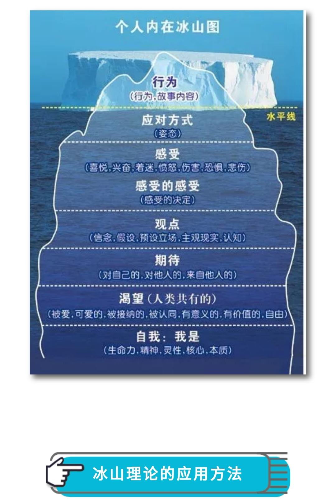

冰山理论¶
基本介绍¶
Iceberg Theory
美国心理治疗师维吉尼亚·萨提亚（Virginia Satir）
* 萨提亚家庭治疗模式
实际上是一个隐喻
* 它指人的“自我”就像一座冰山一样，我们能看到的只是表面很少的一部分——行为
* 而更大一部分的内在世界却藏在更深层次，不为人所见，恰如冰山
七个层次¶
行为:
行为、故事内容 浮在水面之上
应对姿态:
目的并非与人连结，而是自保 为了求生存，保护自己的姿态 四种“沟通姿态”: 2.1 指责 * 在与人应对时，在乎自己，在乎情境，忽略他人 * 总是用否定、命令来沟通，并不是表达自己 2.2 讨好 * 与人应对时，忽略自己，在乎情境，在乎他人 * 为了得到父母的爱，得到他人的认同，总是唯唯诺诺 * 并非表达自己，因为讨好者担心，一旦表达自己 * 就得不到他人重视、爱与价值 2.3 超理智 * 在与人应对时，忽略自己，在乎情境，忽略他人 * 为了得到被认同，沟通时总是争辩、说理认为自己是对的，并不是表达自己 2.4 打岔 * 在与人应对时，忽略自己，忽略情境，在乎他人 * 为了面对压力，沟通时不表达自己，而是用不沟通来沟通
感受:
喜悦、兴奋、着迷、愤怒、伤害、恐惧、悲伤 感受的感受——感受的决定
观点:
信念、假设、预设立场 主观现实、认知
期待
对自己 对他人 来自他人
渴望
人共共有 爱、被爱、被接纳、被认同 有意义、有价值、自由
自我
我是 生命力、精神、灵性、核心、本质
一致性¶
什么样的姿态比较健康呢:
自己能觉察姿态，并愿意为自己负责(初级)
如:知道自己在指责，但你就是要指责，并且愿意为指责的后果负责
一致性的姿态:
内在和谐宁静，外表专注放松
在与人应对时，在乎自己，在乎情境，在乎他人。沟通时懂得表达自己
最简单的理解就是内外一致
难点:
很多人不清楚自己的感受、想法与期待
或者知道自己的感觉、想法与期待，却不一定懂得表达
或者能表达出来，却不是以负责的态度表达
而是以控制者、受害者的方式表达
一致是个选择，不是个规则:
人可以选择任何姿态，但是人必须为自己负责
其他¶

第一层，从女儿上小学开始，到现在为止，我看到她上学磨蹭呀，在家里不收拾吃过的果皮，食品包装，不及时完成作业等等这些小事情，我就会特别急，脾气特别大，这个就是行为(故事内容)。
第二层，我对这些行为的应对方式就是：催促，指责，愤怒的情绪。
第三步的感受是我特别生气，愤怒。当我批评孩子时，她的情绪也是对抗的，会导致我加重愤怒情绪，更加失去控制的，想让孩子按我的想法执行。
第四层就是我在心里会认为孩子不懂事，不体谅父母的辛苦，不孝顺父母等这些观念。
第五层，期待孩子能够自己妥妥当当安排好这些事情，认为孩子到了一定的年龄阶段，都应该做好应分的事情，不让父母操心。因为我在这个年龄段，这些事从不会让我的父母操心，并且可能干的更好。
第六层的是渴望，正是这一层使我觉知到了，我内心真正的渴望是想通过孩子必须成长得足够优秀已满足我被接纳，被认可的愿望。因为我小的时候缺乏关爱，缺乏接纳和认同，潜意识里中下这个意识，内心一直是缺乏力量，在后来的成长中，也没有让自己真正认可接纳自己。所以不自觉的想通过孩子来实现这个愿望。以前没有觉知到这个层面，只觉得可以感受到孩子有很多时间已经很努力，她也特别想让我开心，不想让我生气。可是生活中一点点小小的错误，或者是习惯不好，我都会大发雷霆，心里也明白其实不值得发火的，但就是控制不住自己。现在想想，孩子也很痛苦，感觉生活上总是达不到妈妈的要求。其实她也是非常渴望按她自己的意愿活着，而不是背负着小时候的妈妈。这也导致了，我很难走进孩子的内心，因为我所要求的不是孩子真正的自我，而是我的自我，所以总是不对频道。孩子也老是说我，你给的都不是我想要的，你说的都不是我想听的，你一点都不理解我，我很孤独。每次听到这儿，我总是感到无奈又心酸。
第七层从现在开始已经有了觉知，我的自我太弱小了，自己想要实现的东西，害怕自己得不到。所以我就要学会放下自己的负担，不要把自己的要求，强加给孩子，让孩子真正过她自己的内心想要的世界。我自己想要的，我要通过自己的努力去实现，通过自己不断的学习成长，去完善自己，表现优秀，得到别人的认可和接纳。